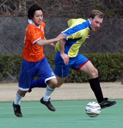

|
Big Circus, Sun 12th March. Big Circus was the name of the ground and Big Circus was the manner of play last Sunday between Wall Street Clash and Dutch Embassy (ringers included). With the ground situated atop a small mountain in Hon-Atsugi and strong winds blowing the match was reminiscent of those joyful 8am kickoffs as a 9yr old when you’d kick a rubber/plastic compound ball in the air to see it sail back over your head. Add to these conditions the extremely bouncy nature of the astro turf to the incredibly bouncy nature of the football and there was less of the ball sticking to feet than a lean steak to teflon cookery. Drop some ‘talent’ from Division Two into the mix and all the ingredients were there for a thoroughly enjoyable display of ping-pong football.
Clash won the toss and decided to kick with the wind in the first half. Despite dominating possession with the aid of the wind the final ball was lacking in quality and penetration. The first Clash shot on target was a freekick just outside the box which Raph (after much debate with Sid) saw cleared a metre out from goal by a Dutch midfielder just as he thought it was going to curl inside the post. Clash’s Sid was beginning to get frustrated with the lack of opportunities coming his way but a venomous 25 yard shot from the exciting debutant Czech in midfield rattled the crossbar and Sid was there to convert a difficult rebound into the top left corner. Nice finishing from the big man.
With the first half coming to an end and Dutch Embassy playing counter-attacking football (due to the atrocious conditions there wasn’t much choice) they almost snuck an equaliser before the break but the ball went wide. Clash went in at halftime knowing that a lead of one goal probably wasn’t enough to hold onto given the conditions.
In the second half Ian marshalled the Clash defence brilliantly before having a stint in the goalmouth. The Dutch weren’t really creating until a high ball ballooned in from the right after 15-20minutes was met by Haru. It was a brilliant finish and Sid (now in goal) was helpless as the ball sailed into the top corner. The remaining minutes were taken up with more ping-pong football. Clash’s Mitsu beat the Dutch keeper to a contested ball but it drifted just wide of the right upright. With 5 minutes remaining Raph had the chance to latch onto a wind affected cross which fooled both Dutch defender and keeper. Running into the gap between the two he stumbled and hit a weak shot which the keeper parried down low to his left and out for a corner. With most of the game seeing the ball spraying around the midfield with little control a draw was probably a fair result for these two mid-table teams.
Match reporter: Gaffa.
|